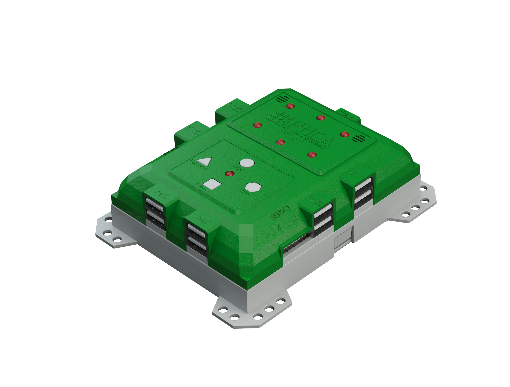

This Scratch extension lets you interact with the physical world using an ALPHA Maker board. For example, you can control lights and motors or measure light and temperature.
The ALPHA Maker extension uses ScratchX, which is the Experiemental Extension system for the Scratch programming language.
Block translations have been provided for the following languages: